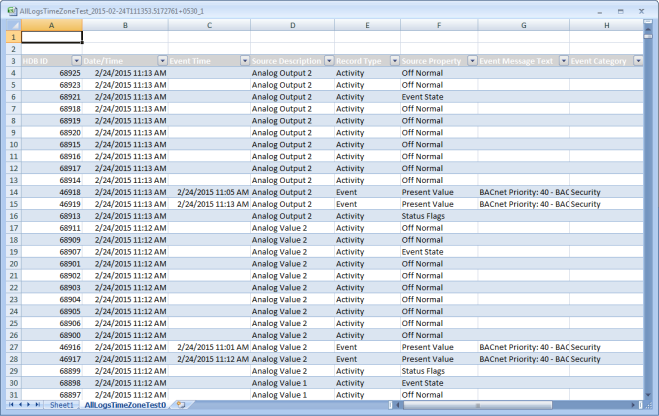
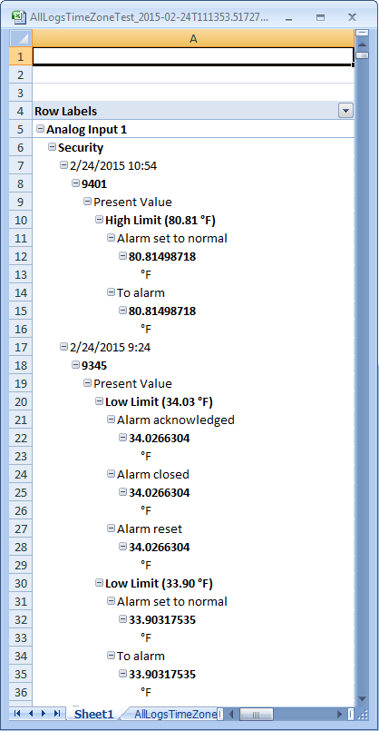

Excel Report Format
After executing a Report Definition manually or automatically, you can view and save the report as an Excel (XLSX) document.
This enables you to perform any calculations (if required) on the Excel document by applying Excel formulas.
You can either view the Excel document in the Report Management section under the Report snapshot when you generate the
report manually or you can locate them in the folder configured in the Report Output Definition dialog box when you generate the report automatically.
If the size of the document exceeds the Excel maximum of 1000 worksheets or 1,048,575 rows, a new Excel file is created for the next set of records.
An Excel document contains all of the reporting elements of the Report Definition with output data and user-defined configuration.
Form Controls in the report definition are not present in the Excel document. Any special formatting applied to the Report Definition elements are not retained in the Excel document.
If you have multiple tables or plots in a report definition, the generated Excel document displays the details of each table or plot in a separate worksheet.
Each worksheet also displays information on other reporting elements such as keywords and logos in the report definition.
Each column in the worksheet has a combo box that corresponds to a table column that enables you to perform analysis on the table data.
In case of an Event Details table the generated Excel document does not have any combo boxes as the data displays parent and child records.
However, if you remove the child columns from the Select Columns dialog box, run the report, and then generate the Excel document,
only the parent records display and the columns display a combo box that enables you to perform data analysis.

In order to perform analysis on a specific set of columns in a table, you can add a PivotTable or chart to the generated Excel document
and set this document as a template to the report definition having this table.
When you run the report and generate the Excel document, information related to the columns you added to the PivotTable or chart displays in a separate worksheet.
The PivotTable or chart in the template must have columns of only those tables that are present in the report definition.
For example, if you have a report definition with an All Logs table, the PivotTable or chart in the Excel document that is set as a template
to this definition must have columns specific to the All Logs table only.
In case of an Event Details table, you must remove all the child columns for the PivotTable to be displayed.

In case of a distributed system, the process of generating the PDF or XLS documents will stop if you switch over to a different system.
During this process, if the document is likely to be split into multiple documents, then the pending documents will not be available.
You can decide whether you want to proceed with the document generation process by confirming to the dialog box options that display when you switch over to a different system.